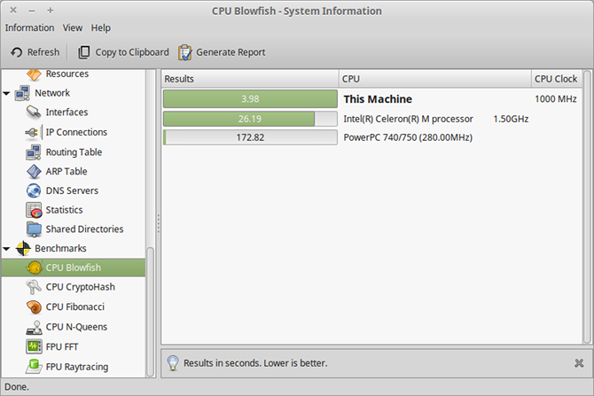

2. HARDiNFO

HARDiNFO может быть установлена в большинстве дистрибутивов Linux, с помощью стандартного менеджера пакетов. Для установки в Ubuntu выполните:
sudo apt-get install hardinfo
А в Fedora, Red Hat и CentOS:
sudo yum install hardinfo
Основная задача Hardinfo - показывать информацию об оборудовании, но кроме того содержит шесть различных тестов, которые вы можете выполнять, чтобы сравнить свое оборудование с другими системами. Тесты включают целочисленные вычисления и вычисления с плавающей точкой.